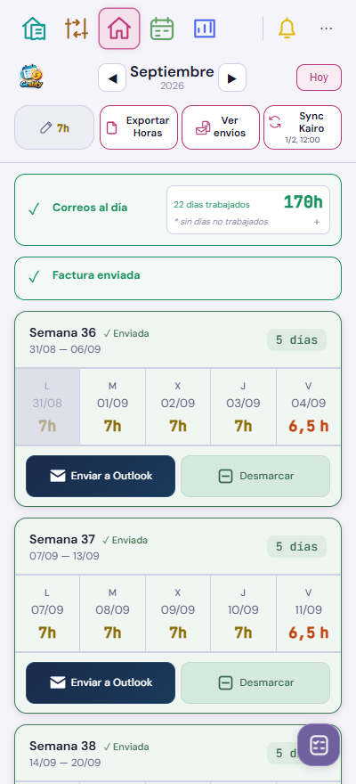
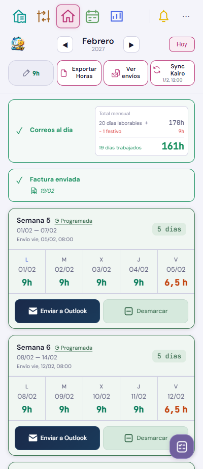
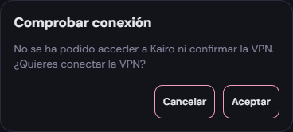

Home · Histórico y conexión · v544
Capturas de Gestify con datos ficticios. Los meses anteriores mantienen «Correos al día» y «Factura enviada». Se retira «Ver cálculo histórico» y se amplía el espacio entre iconos y títulos.






La programación mensual requiere que los correos del mes anterior estén enviados o programados. Kairo aplica también el bloqueo antes de escribir. El envío manual a Outlook y la edición de días conservan sus botones y funcionamiento.
MacroDroid publicará el modo confirmado para que Gestify lea ese registro local. El lector y su contrato están preparados; falta configurar y validar el puente en el Vivo. Un registro ausente no se interpreta como VPN apagada. Si el registro confirma la VPN y Kairo falla, se informa de que Kairo no responde.
Solo se han actualizado las escenas afectadas de Home. Las demás capturas y sus revisiones se conservan. No se han enviado ni programado correos reales.